Chapter 1: Chip Design Foundations¶
Before you write a line of Verilog or open a layout tool, you need the big picture: what a custom chip is, how a transistor works, how logic gates become flip-flops and state machines, and why timing and power rule every decision. This chapter builds that foundation from zero and then walks through the whole journey from an idea on a whiteboard to a packaged chip on a circuit board. It ends with the business side: who does what in the industry, and why a chip can cost millions before the first one is sold.
1.1 What Is an ASIC? (vs FPGA, CPU, GPU and SoC)¶
An ASIC (Application-Specific Integrated Circuit) is a chip designed to do one particular job extremely well, such as decoding video, mining a cryptocurrency or running a phone. Once it is manufactured its circuits are fixed forever. Other chips trade that efficiency for flexibility: a CPU runs any software, a GPU runs many parallel calculations, and an FPGA is a chip whose wiring you can reprogram after manufacture.
CPU vs FPGA vs ASIC
| CPU / MCU | FPGA | ASIC | |
|---|---|---|---|
| Flexibility | Any software | Reprogrammable logic | Fixed at manufacture |
| Perf per watt | Lowest | Medium | Highest |
| Unit cost at volume | Medium | High | Lowest |
| Up-front NRE | Almost none | Low | Millions of dollars |
| Time to product | Weeks | Weeks to months | 1-2+ years |
| Fixing a bug | Software update | New bitstream | Respin or workaround |
Moving right buys efficiency and low unit cost at the price of NRE, time and flexibility.
Think of it like…
A CPU is a Swiss Army knife, an FPGA is a box of LEGO you can rebuild any time, and an ASIC is a custom-forged chef's knife: it does one job, but faster and cheaper per cut than anything else.
Real-world example
Northwind Audio sells wireless earbuds. Their first prototype used a small FPGA to run the noise-cancelling filter, but it drained the battery in two hours. Once the design was proven, they turned it into an ASIC: the same filter now uses one-tenth of the power and costs 40 cents per chip instead of 9 dollars. The catch was a 3 million dollar up-front cost and 14 months of work.
How it works¶
- Decide what the chip must do and how fast, how cheap and how low-power it must be.
- If volumes are small or the design will change, an FPGA or off-the-shelf processor is usually better.
- If volumes are high or power/performance requirements are extreme, an ASIC pays off.
- Modern ASICs are usually SoCs: CPU cores, memory, accelerators and interfaces on one die.
- Some products start on FPGA for prototyping and move to ASIC for mass production.
Who uses it
Chip companies like Apple, NVIDIA, Qualcomm, Broadcom and Google, plus thousands of start-ups and automotive, medical and IoT companies, design ASICs.
Key takeaway
Interviewers love the question 'ASIC or FPGA?': answer with volume, unit cost, power, performance, NRE and time-to-market.
Going deeper
- Implementing the same logic in an FPGA instead of standard cells typically costs tens of times more area, several times more delay and roughly an order of magnitude more dynamic power, because LUTs and routing switches replace fixed gates.
- Most modern ASICs are SoCs whose die area is dominated by licensed or reused IP and SRAM; the company's own differentiating logic is often a minority of the gates.
- The ASIC decision weighs volume, unit cost, power, performance, NRE, schedule, risk and IP protection; a fixed chip is also much harder to copy than an FPGA bitstream.
- Hybrid options exist: FPGA prototypes before tapeout, embedded FPGA (eFPGA) fabric inside an ASIC from vendors such as Achronix, and structured ASICs that customise only a few layers.
- Digital ASICs today are almost entirely standard-cell designs; full-custom layout survives for SRAM bit cells, analog and I/O circuits, and a few of the fastest CPU datapaths.
- Each market adds its own rules: automotive ASICs need AEC-Q100 qualification and ISO 26262 safety work, medical implants need extreme reliability, and data-centre chips chase performance per watt.
Common mistakes & misconceptions
- Assuming an ASIC always beats an FPGA: at low volume or with changing requirements, NRE and schedule risk make FPGAs or standard chips the better business choice.
- Confusing SoC with ASIC: SoC describes what is integrated, ASIC describes how and for whom the chip is built — a phone SoC is both.
- Expecting an FPGA design to port straight to ASIC: vendor primitives, clocking, initial values and memories must be reworked, and DFT must be added.
Key concepts, tools, formats, standards & companies¶
| Name | What it does | Example |
|---|---|---|
| ASIC (Application-Specific Integrated Circuit) General industry term · Concept · Whole flow |
A chip custom-designed for one application, with fixed circuits that give the best power, performance and unit cost. | Bitcoin mining chips, Google's TPU and the image processor inside a phone camera are ASICs. |
| FPGA (Field-Programmable Gate Array) AMD (Xilinx), Altera, Lattice, Microchip · Device |
A chip full of configurable logic blocks and wiring that can be reprogrammed with a new design in seconds. | An engineer loads a new image-filter design onto an AMD Artix board to test it before committing to silicon. |
| CPU (Central Processing Unit) Intel, AMD, Arm-based designs, RISC-V · Device |
A general-purpose processor that runs any software by executing instructions one after another, very flexibly. | A laptop's CPU runs a browser, a spreadsheet and a game, all from software instructions. |
| GPU (Graphics Processing Unit) NVIDIA, AMD, Intel, Arm, Imagination · Device |
A processor with thousands of simple cores that perform the same calculation on lots of data at once. | GPUs render 3D games and train AI models because both need millions of parallel multiplications. |
| SoC (System on Chip) General industry term · Concept · Spec/Architecture |
A single chip that integrates CPUs, GPU, memory controllers, accelerators and I/O interfaces: a whole computer on one die. | A smartphone application processor is an SoC with CPU cores, GPU, modem, camera ISP and AI engine. |
| Structured ASIC / eASIC Intel (eASIC, discontinued), various · Concept |
A halfway house where most layers are pre-made and only a few metal layers are customised, lowering NRE. | A company once used a structured ASIC to move an FPGA design into cheaper silicon with lower mask cost. |
| Full-custom vs semi-custom (standard-cell) design General industry term · Methodology · Whole flow |
Full-custom draws every transistor by hand; standard-cell design builds digital logic from a pre-made library of gates. | Analog blocks and SRAM bit cells are full-custom; a 50-million-gate digital controller is built from standard cells. |
| ASSP (Application-Specific Standard Product) General industry term · Concept |
A chip built for one application but sold to many customers, unlike an ASIC built for one company. | A USB-to-Ethernet bridge chip sold by a catalogue vendor to hundreds of product makers is an ASSP. |
| Accelerator / NPU General industry term · Concept · Spec/Architecture |
A specialised hardware block or chip that speeds up one class of work, such as neural networks, far beyond a CPU. | The NPU in a laptop chip runs background-blur in video calls using a fraction of CPU power. |
| Die, wafer and chip General industry term · Concept · Fabrication |
A wafer is a round silicon disc; it is cut into many rectangular dies; a packaged die is what people call a chip. | One 300 mm wafer might hold about 600 dies of 100 square millimetres each. |
| Microcontroller (MCU) STMicroelectronics, NXP, Microchip, Renesas, Raspberry Pi · Device |
A small, cheap chip combining a CPU core, flash, SRAM and peripherals for embedded control. | An STM32 or RP2040 in a thermostat reads a temperature sensor and switches a relay. |
| DSP (Digital Signal Processor) Texas Instruments, Cadence Tensilica, CEVA · Device |
A processor optimised for fast multiply-accumulate on streams of samples, used for audio, radio and sensor processing. | A hearing aid's DSP filters and amplifies sound thousands of times per second using very little power. |
| Digital, analog and mixed-signal ICs General industry term · Concept · Whole flow |
Digital chips process 0s and 1s; analog chips handle continuous signals; mixed-signal chips combine both on one die. | A sensor-interface chip combines an analog amplifier, an ADC and a digital filter with an SPI interface. |
| Performance per watt Industry metric · Concept |
Useful work delivered per unit of power; fixed-function ASICs often beat general processors by an order of magnitude or more. | A video-encoder ASIC compresses 4K video at a few watts where a CPU would need tens of watts. |
1.2 Semiconductor Basics: Silicon, Doping and the MOSFET¶
Silicon is a semiconductor: it conducts electricity better than glass but worse than copper, and we can control exactly how well. Adding tiny amounts of other elements (doping) creates N-type silicon with spare electrons or P-type silicon with 'holes' (missing electrons). A MOSFET transistor uses a voltage on its gate to turn a channel of current on or off, acting as an electrically controlled switch.
Think of it like…
A MOSFET is like a garden hose with a tap: the gate voltage is your hand on the tap, and the current is the water flowing from source to drain.
Real-world example
In a 1.0 V chip, when Priya's design puts 1.0 V on the gate of an NMOS transistor, a thin channel of electrons forms under the gate and current flows from drain to source: the switch is ON. When the gate is at 0 V, the channel disappears and the switch is OFF. Billions of these switches flipping billions of times a second are what make a processor compute.
How it works¶
- Start with very pure crystalline silicon.
- Dope regions with phosphorus or arsenic (N-type) or boron (P-type) to control conductivity.
- Build a gate electrode separated from the silicon by a thin insulating layer (the gate oxide or high-k dielectric).
- Apply voltage to the gate: above the threshold voltage (Vt) a conducting channel forms between source and drain.
- NMOS turns on with a high gate voltage; PMOS turns on with a low gate voltage.
Who uses it
Device physicists, process engineers and analog designers work at this level daily; digital designers need the basics for power, timing and interview questions.
Key takeaway
Remember: NMOS passes a strong 0, PMOS passes a strong 1, which is why CMOS uses PMOS to pull up and NMOS to pull down.
Going deeper
- Operating regions: below Vt a transistor is in subthreshold (small, exponential leakage current); above Vt it conducts in the linear region at low drain voltage and saturates at higher drain voltage.
- Subthreshold swing is ideally about 60 mV per decade of current at room temperature, so every ~60-100 mV cut in Vt raises off-state leakage roughly tenfold.
- Leakage rises steeply with temperature, so a chip at 105 °C leaks many times more than at 25 °C; leakage power is therefore signed off at hot corners.
- Short-channel effects such as drain-induced barrier lowering weaken gate control as channels shrink; FinFET and gate-all-around structures wrap the gate around the channel to restore it.
- 300 mm wafers are standard for advanced logic, 200 mm remains common for analog, power and MEMS, and the industry abandoned a 450 mm transition in the mid-2010s.
- Core supply voltages fell from 5 V in the 1980s to roughly 0.7-0.9 V at leading-edge nodes; they cannot drop much further because Vt cannot shrink without leakage exploding.
Common mistakes & misconceptions
- Believing '3 nm' describes a 3 nm feature: node names are marketing labels, so compare density, speed and power data instead.
- Assuming an off transistor draws no current: leakage across billions of devices can dominate standby power.
- Mixing up carrier types: NMOS conducts with electrons and turns on with a high gate; PMOS conducts with holes and turns on with a low gate.
Key concepts, tools, formats, standards & companies¶
| Name | What it does | Example |
|---|---|---|
| Semiconductor Physics / materials science · Concept · Fabrication |
A material whose conductivity sits between a conductor and an insulator and can be precisely controlled. | Silicon is the dominant semiconductor; gallium nitride and silicon carbide are used in power chips. |
| Doping (N-type and P-type) Semiconductor fabrication · Process · Fabrication |
Adding impurity atoms to silicon: phosphorus or arsenic gives extra electrons (N), boron gives holes (P). | The source and drain of an NMOS transistor are heavily N-doped regions in a P-type well. |
| MOSFET Metal-Oxide-Semiconductor Field-Effect Transistor · Concept · Fabrication |
A transistor with gate, source, drain and body terminals, where gate voltage controls current between source and drain. | A modern CPU contains tens of billions of MOSFETs acting as tiny switches. |
| NMOS and PMOS MOSFET types · Concept |
NMOS conducts when its gate is high using electrons; PMOS conducts when its gate is low using holes. | In an inverter, the PMOS connects the output to VDD and the NMOS connects it to ground. |
| Threshold voltage (Vt) Device physics · Concept |
The gate voltage at which a transistor starts to conduct strongly; lower Vt is faster but leaks more. | Libraries offer low-Vt (fast, leaky) and high-Vt (slow, low-leakage) versions of each cell. |
| Gate oxide / high-k metal gate (HKMG) Introduced in volume by Intel at 45 nm (2007) · Concept · Fabrication |
The insulator under the gate; high-k materials like hafnium oxide replaced silicon dioxide to reduce gate leakage. | Every node since about 45 nm uses a high-k dielectric with a metal gate electrode. |
| Channel length and 'process node' Industry naming · Concept · Fabrication |
Node names like '3 nm' were once gate lengths; today they are marketing labels for a technology generation. | A TSMC N3 transistor has no feature that actually measures 3 nanometres. |
| Leakage current Device physics · Concept |
Small current that flows through a transistor even when it is switched off, wasting power. | A phone chip in standby still drains the battery slowly because of leakage in billions of transistors. |
| Silicon wafer Wafer makers: Shin-Etsu, SUMCO, GlobalWafers, Siltronic, SK Siltron · Concept · Fabrication |
A thin, polished disc sliced from a single-crystal silicon ingot; leading fabs use 300 mm diameter wafers. | A 300 mm wafer is about 0.775 mm thick and becomes hundreds of chips. |
| Moore's Law Gordon Moore (1965, revised 1975) · Concept |
The observation that transistor counts on a chip double roughly every two years. | Chips grew from 2,300 transistors (Intel 4004, 1971) to over 100 billion in today's largest GPUs. |
| Carrier mobility (electrons vs holes) Device physics · Concept |
How easily charge carriers move; in silicon, electrons are roughly two to three times more mobile than holes. | Library inverters make the PMOS wider than the NMOS so rising and falling outputs switch at similar speeds. |
| On-current and Ion/Ioff ratio Device physics · Concept |
Ion sets how fast a transistor charges loads; the Ion/Ioff ratio measures how good a switch it is. | Engineers comparing two nodes check both how much faster Ion is and how much worse Ioff leakage became. |
| Wells and substrate CMOS process structure · Concept · Fabrication |
Doped regions hosting transistors: NMOS sit in P-type substrate or P-well, PMOS in an N-well, each tied to a supply. | Tap cells in every standard-cell row connect wells to VDD and ground, preventing latch-up. |
| Interconnect (metal wires and vias) BEOL wiring · Concept · Fabrication |
Copper wiring layers above the transistors that connect them; at advanced nodes wire delay rivals gate delay. | A modern SoC may have more than a dozen metal layers, thin at the bottom and thick near the top. |
1.3 CMOS Logic: Inverters, NAND and NOR Gates¶
CMOS (Complementary MOS) logic pairs PMOS and NMOS transistors so that, in a steady state, one network is on and the other is off. That means almost no current flows except while switching, which is why CMOS dominates. The simplest gate is the inverter (NOT); NAND and NOR are built from series and parallel transistors and can make any logic function.
Three basic CMOS gates
| Inverter | NAND2 | NOR2 | |
|---|---|---|---|
| Transistors | 2 | 4 | 4 |
| PMOS pull-up | 1 | 2 in parallel | 2 in series |
| NMOS pull-down | 1 | 2 in series | 2 in parallel |
| Output is 0 when | A = 1 | A = 1 and B = 1 | A = 1 or B = 1 |
| Universal gate? | No | Yes | Yes |
| Relative speed | Fastest | Good | Slower (series PMOS) |
Series and parallel transistor networks are mirror images in the pull-up and pull-down.
Think of it like…
A CMOS gate is like two doors at either end of a corridor: one leads to VDD (logic 1) and one to ground (logic 0), and they are wired so exactly one is open at a time.
Real-world example
A two-input NAND gate has two PMOS in parallel to VDD and two NMOS in series to ground. The output only goes low when both inputs are 1, because then both NMOS are on and both PMOS are off. With any input at 0, at least one PMOS pulls the output high. Draw this on paper: it is a classic interview question.
How it works¶
- Inverter: one PMOS from VDD to output, one NMOS from output to ground, gates tied together.
- NAND: PMOS in parallel (pull-up), NMOS in series (pull-down).
- NOR: PMOS in series (pull-up), NMOS in parallel (pull-down).
- Complex gates (AOI, OAI) combine series/parallel networks in one cell for efficiency.
- Standard-cell libraries package hundreds of these gates in different sizes (drive strengths).
Who uses it
Standard-cell library designers, circuit designers and every VLSI student meet CMOS gates; digital designers use them through the library.
Key takeaway
NAND is usually preferred over NOR in CMOS because series NMOS (fast electrons) hurt less than series PMOS (slower holes).
Going deeper
- Static CMOS gates are naturally inverting: one stage can only build NAND, NOR or AOI-style functions, so an AND gate is a NAND plus an inverter and is slower.
- Series stacks slow gates down, so libraries rarely offer gates wider than four inputs; synthesis builds wide functions as trees of two- and three-input cells.
- Gate delay is roughly on-resistance times load capacitance; doubling a cell's drive strength halves its resistance but doubles the input capacitance seen by the previous stage.
- The fan-out-of-4 (FO4) inverter delay is a technology-neutral yardstick; designers describe clock periods in FO4 units, for example roughly 15-25 FO4 per high-performance pipeline stage.
- Standard-cell libraries hold hundreds to over a thousand cells: logic in several sizes and Vt flavours, flip-flops, clock buffers, clock-gating cells, plus filler, tie and tap cells.
- Short-circuit current flows while both networks conduct during a slow input transition, which is one reason tools enforce maximum transition (slew) limits.
Common mistakes & misconceptions
- Assuming NAND and NOR are equally good: NOR's series PMOS use slower holes, so NAND-based logic is usually preferred in CMOS.
- Forgetting AND and OR need an extra inverter stage in CMOS, making them larger and slower than NAND and NOR.
- Thinking bigger cells are always faster: upsizing a gate loads the gate driving it and can slow the whole path.
Try it: A CMOS inverter as a SPICE netlist (ngspice)¶
* CMOS inverter
VDD vdd 0 1.8
VIN in 0 PULSE(0 1.8 0 100p 100p 1n 2n)
MP out in vdd vdd pmos W=2u L=0.18u
MN out in 0 0 nmos W=1u L=0.18u
.model nmos nmos level=1
.model pmos pmos level=1
.tran 10p 6n
.end
Key concepts, tools, formats, standards & companies¶
| Name | What it does | Example |
|---|---|---|
| CMOS (Complementary MOS) Invented by Frank Wanlass, Fairchild (1963) · Concept |
Logic style using complementary PMOS pull-up and NMOS pull-down networks, drawing almost no static current. | Nearly every digital chip made today, from watches to supercomputers, is CMOS. |
| Inverter (NOT gate) Basic CMOS cell · Concept |
The simplest CMOS gate, using one PMOS and one NMOS to output the opposite of its input. | Chains of inverters are used as buffers to drive long wires and as ring oscillators to measure speed. |
| NAND gate Basic CMOS cell · Concept |
Outputs 0 only when all inputs are 1; universal, so any logic can be built from NANDs alone. | A NAND2 cell is often the unit used to count design size in 'gate equivalents'. |
| NOR gate Basic CMOS cell · Concept |
Outputs 1 only when all inputs are 0; also universal but slower in CMOS due to series PMOS. | The Apollo Guidance Computer was built entirely from NOR gates. |
| AOI / OAI complex gates Standard-cell libraries · Concept |
AND-OR-INVERT and OR-AND-INVERT cells combine several functions in one compact, fast gate. | Synthesis maps the expression NOT((A AND B) OR C) to a single AOI21 cell. |
| Transmission gate CMOS circuit technique · Concept |
A PMOS and NMOS in parallel acting as a switch that passes both 0 and 1 cleanly. | Multiplexers and flip-flops inside standard-cell libraries often use transmission gates. |
| Gate equivalent (GE) Industry metric · Concept |
Design size measured as the area of an equivalent number of NAND2 gates, independent of technology. | A small RISC-V core might be about 20,000 gate equivalents. |
| Drive strength (X1, X2, X4...) Standard-cell libraries · Concept · Synthesis |
Larger transistor versions of a cell that can charge bigger loads faster, at the cost of area and power. | A BUF_X8 drives a long net to 40 flip-flops that a BUF_X1 would drive too slowly. |
| Fan-in and fan-out Digital design terms · Concept |
Fan-in is the number of inputs to a gate; fan-out is how many gate inputs one output drives. | A signal with fan-out of 200 needs a buffer tree, or it will switch very slowly. |
| SPICE UC Berkeley (1973); commercial and open versions · Tool · Open source |
Circuit simulator that computes voltages and currents in transistor netlists; the basis of analog and cell characterisation. | Students simulate an inverter in ngspice to see its switching threshold and delay. |
| XOR / XNOR gate Basic CMOS cell · Concept |
XOR outputs 1 when inputs differ, XNOR when they match; essential for adders, parity and comparators, but larger than NAND. | A 32-bit parity generator is a tree of 31 two-input XOR gates. |
| Static vs dynamic (domino) logic CMOS circuit styles · Concept |
Static CMOS always drives its output; dynamic logic precharges then evaluates, faster but harder to design and verify. | Some older high-speed CPUs used domino logic in ALUs; standard-cell ASICs use static CMOS. |
| Logical effort Sutherland, Sproull and Harris (1999 book) · Methodology |
A pencil-and-paper method for estimating path delay and choosing gate sizes to minimise it. | Logical effort shows a large load is best driven through a chain of inverters each growing about four times. |
| Noise margin and transfer curve CMOS circuit analysis · Concept |
An inverter's output-vs-input voltage curve; noise margins show how much interference a gate tolerates before misreading. | Students plot the transfer curve in ngspice and read the switching threshold near VDD/2. |
1.4 Digital Logic Refresher: Gates, Flip-Flops and State Machines¶
Digital circuits come in two kinds. Combinational logic (adders, multiplexers, decoders) produces outputs that depend only on current inputs. Sequential logic (latches and flip-flops) remembers values, so outputs depend on history; a clock tells flip-flops when to capture new values. Combine both and you get finite state machines (FSMs), the brains of every controller.

Think of it like…
Combinational logic is a calculator that answers instantly; a flip-flop is a notepad that only updates when the teacher rings the bell (the clock edge).
Real-world example
A traffic-light controller at Elm Street has four states: NS-green, NS-yellow, EW-green, EW-yellow. A 2-bit register holds the current state, combinational logic decides the next state based on a timer, and on each clock edge the register updates. The light outputs are decoded from the state. This tiny FSM is a classic first Verilog exercise.
How it works¶
- Combinational logic computes outputs from inputs through gates (no memory).
- A latch is level-sensitive: it is transparent while enable is high and holds when low.
- A D flip-flop is edge-triggered: it captures D only at the rising (or falling) clock edge.
- Registers are groups of flip-flops; pipelines put registers between stages of logic.
- An FSM = state register + next-state logic + output logic (Moore or Mealy style).
Who uses it
Every RTL designer and verification engineer works with these building blocks every day.
Key takeaway
Know the difference between a latch and a flip-flop cold, and be able to draw a Moore vs Mealy FSM.
Going deeper
- A flip-flop is usually two latches in master-slave arrangement: the master is transparent while the clock is low and the slave while it is high, giving edge-triggered behaviour.
- Library flip-flops are characterised for clock-to-Q delay, setup time and hold time at every corner; these numbers live in Liberty files used by synthesis and STA.
- FSM design flow: draw the state diagram, list transitions, choose an encoding, code the state register, next-state logic and output logic, and add a safe default for unused states.
- Pipelining raises throughput but adds latency: a five-stage pipeline delivers one result per cycle once full, yet each instruction still takes five cycles to complete.
- Synthesis minimises logic automatically with algorithms far beyond K-maps (for example ABC's and-inverter-graph rewriting), so K-maps matter for understanding and interviews rather than daily work.
- The synchronous design rule — every flop on a clean clock edge, only combinational logic between flops, no combinational loops — is what makes static timing analysis possible.
Common mistakes & misconceptions
- Creating combinational loops (an output feeding its own input without a flop); they oscillate or latch unpredictably and break timing analysis.
- Inferring latches by accident through incomplete combinational code; use flip-flops unless a latch is truly intended.
- Using a combinational or glitchy signal as a clock or asynchronous reset; a glitch can create a false edge.
Try it: A D flip-flop with synchronous reset in Verilog¶
module dff (input clk, input rst, input d, output reg q);
always @(posedge clk)
if (rst) q <= 1'b0;
else q <= d;
endmodule
Key concepts, tools, formats, standards & companies¶
| Name | What it does | Example |
|---|---|---|
| Combinational logic Digital design fundamentals · Concept · RTL Design |
Logic whose outputs depend only on present inputs, with no memory or clock. | A 32-bit adder that outputs A+B as soon as A and B settle is combinational. |
| Sequential logic Digital design fundamentals · Concept · RTL Design |
Logic containing memory elements, so outputs depend on stored state as well as inputs. | A counter that increments every clock cycle is sequential. |
| D flip-flop Digital design fundamentals · Concept |
Edge-triggered storage element that copies its D input to Q at each active clock edge. | A pipeline register in a CPU is a row of D flip-flops capturing results each cycle. |
| Latch Digital design fundamentals · Concept |
Level-sensitive storage element: transparent while enabled, holding its value while disabled. | Clock-gating cells use a latch internally to prevent glitches on the gated clock. |
| Finite state machine (FSM) Digital design fundamentals · Concept · RTL Design |
A circuit with a fixed set of states that moves between them based on inputs, one step per clock. | A UART receiver FSM moves through IDLE, START, DATA and STOP states. |
| Moore vs Mealy machine Edward Moore (1956), George Mealy (1955) · Concept |
Moore outputs depend only on state; Mealy outputs depend on state and current inputs, reacting a cycle sooner. | A Moore traffic light shows colours per state; a Mealy detector flags a pattern in the same cycle it arrives. |
| Multiplexer (MUX) Digital design fundamentals · Concept |
A selector that passes one of several inputs to its output based on control bits. | A 4:1 MUX chooses which of four registers feeds the ALU. |
| Adder (ripple-carry, carry-lookahead) Digital design fundamentals · Concept |
Circuits that add binary numbers; faster designs compute carries in parallel at the cost of area. | Synthesis tools pick a fast parallel-prefix adder on a critical path and a small ripple adder elsewhere. |
| Pipelining Computer architecture technique · Methodology · Spec/Architecture |
Splitting long logic into stages separated by registers so a higher clock frequency is possible. | A 5-stage RISC-V pipeline fetches, decodes, executes, accesses memory and writes back in parallel. |
| Boolean algebra and Karnaugh maps George Boole (1847), Maurice Karnaugh (1953) · Concept |
Mathematics of true/false logic and a visual method to simplify small logic expressions. | Students reduce a 4-variable truth table to a minimal sum-of-products with a K-map. |
| Decoder and encoder Digital design fundamentals · Concept |
A decoder activates one of 2^n outputs from an n-bit code; an encoder does the reverse. | An address decoder uses four address bits to select one of 16 peripheral registers. |
| Shift register Digital design fundamentals · Concept |
A chain of flip-flops that moves bits one position per clock, used for serial I/O and delays. | A UART transmitter shifts out its eight data bits one at a time on each baud tick. |
| Counter Digital design fundamentals · Concept · RTL Design |
A register plus incrementer that counts clock cycles or events; the basis of timers, PWM and baud-rate generators. | A 16-bit counter divides a 50 MHz clock to produce a 1 kHz timer tick. |
| Glitch (hazard) Digital design fundamentals · Concept |
A brief unwanted pulse on a combinational output while inputs change at slightly different times. | Glitches are harmless when sampled by flops but dangerous on clocks, resets or asynchronous outputs. |
1.5 Binary Numbers and Arithmetic for Hardware¶
Hardware stores every value in a fixed number of bits. You need to read binary and hexadecimal, represent negative numbers with two's complement, know what happens when a result overflows its width, and use fixed-point or floating-point formats for fractions. Getting widths and signs right is a daily part of RTL design.
Think of it like…
A fixed-width register is like a car's odometer: it has a set number of digits, and after 99999 it rolls over to 00000.
Real-world example
Wen designs an audio volume block. Samples are 16-bit signed two's complement, from -32,768 to +32,767. Multiplying by a signed 8-bit gain gives a 24-bit product, so she keeps all 24 bits, rounds, and saturates back to 16 bits. Without saturation, loud samples would wrap to large negative values and the speaker would crackle.
How it works¶
- Binary: each bit is a power of two; hexadecimal groups four bits per digit (8'hA5 = 1010_0101).
- Unsigned n bits hold 0 to 2^n − 1; two's complement holds −2^(n−1) to 2^(n−1) − 1.
- Negate in two's complement by inverting every bit and adding 1.
- An n-bit plus n-bit sum needs n+1 bits; an n-bit by m-bit product needs n+m bits.
- For fractions use fixed-point (Q format) or floating-point (IEEE 754, bfloat16, FP8).
Who uses it
RTL designers, DSP and AI-accelerator engineers, and verification engineers writing reference models use these skills every day.
Key takeaway
In Verilog and SystemVerilog, mixing signed and unsigned operands makes the whole expression unsigned — a classic interview trap and a common silicon bug.
Going deeper
- Two's complement is universal because one adder handles both signs: A − B is computed as A + ~B + 1, with the +1 entering through the carry-in.
- Overflow rules: unsigned addition overflows when there is a carry-out; signed addition overflows when both operands share a sign and the result's sign differs.
- DSP datapaths track Q formats: multiplying Q1.15 by Q1.15 gives Q2.30, which is then rounded and saturated back to Q1.15 for storage.
- AI accelerators favour narrow formats such as INT8, FP8 and block-scaled FP4 because multiplier area grows roughly with the square of the operand or mantissa width.
- IEEE 754 defines subnormals, ±infinity, NaN and several rounding modes; many hardware units flush subnormals to zero to save area, which must be documented and verified.
Common mistakes & misconceptions
- Mixing signed and unsigned operands in Verilog: the whole expression becomes unsigned, so negative values compare as huge positives.
- Dropping the carry by assigning an n-bit sum to an n-bit signal; size results using width-growth rules.
- Truncating instead of rounding in DSP chains, which adds a systematic negative bias that accumulates and degrades signal quality.
Try it: Signed vs unsigned surprises in SystemVerilog¶
logic signed [7:0] a = -8'sd3; // stored as 8'hFD
logic [7:0] b = 8'd2;
logic signed [15:0] w;
initial begin
w = a; // sign-extends to 16'hFFFD (-3)
$display("%0d", a < b); // 0: unsigned compare, 253 < 2 is false
$display("%0d", a < $signed(b)); // 1: signed compare, -3 < 2
end
Key concepts, tools, formats, standards & companies¶
| Name | What it does | Example |
|---|---|---|
| Binary and hexadecimal Number systems · Concept · RTL Design |
Base-2 numbers use bits worth powers of two; hexadecimal writes four bits as one digit 0-F. | The register value 0x3C is binary 0011_1100, which is decimal 60. |
| Verilog number literals IEEE 1800 SystemVerilog · Concept · RTL Design |
Sized literals such as 8'hFF, 4'b1010 and 16'd500 state width and base; unsized literals default to 32 bits. | Writing 8'hFF rather than 255 documents the width and avoids lint truncation warnings. |
| Two's complement Number representation · Concept · RTL Design |
The standard way to store signed integers: the top bit carries negative weight, so one adder serves both signs. | In 8 bits, −1 is 8'hFF and −128 is 8'h80. |
| Overflow and wrap-around Fixed-width arithmetic · Concept · RTL Design |
When a result needs more bits than its destination, the high bits are lost and the value wraps around. | In an 8-bit register, 250 + 10 gives 4, not 260. |
| Sign extension Fixed-width arithmetic · Concept · RTL Design |
Copying the sign bit into new upper bits when widening a signed value, so its value is preserved. | −3 in 4 bits (1101) becomes 1111_1101 when widened to 8 bits. |
| Bit-width growth rules Datapath design practice · Concept · RTL Design |
A sum needs one extra bit, a product needs the sum of both widths, and accumulating N values needs log2(N) extra bits. | Summing 256 sixteen-bit samples safely needs a 24-bit accumulator. |
| Saturation arithmetic DSP practice · Concept · RTL Design |
Clamping a result to the largest or smallest representable value instead of letting it wrap round. | An image pipeline saturates so a very bright pixel stays white instead of turning black. |
| Fixed-point (Q format) DSP practice · Concept · RTL Design |
Integers with an implied binary point; Q1.15 has one sign/integer bit and fifteen fraction bits. | The value 0.5 in Q1.15 is stored as 16'h4000. |
| Rounding and truncation DSP practice · Concept · RTL Design |
Ways to drop low bits: truncation floors toward minus infinity in two's complement, rounding adds half an LSB first. | After a multiply, adding 1 << 7 before dropping 8 fraction bits rounds to nearest instead of always rounding down. |
| Signed vs unsigned in Verilog IEEE 1800 SystemVerilog semantics · Concept · RTL Design |
Values are unsigned unless declared signed; if any operand is unsigned, the expression is evaluated as unsigned. | Comparing a signed −3 with an unsigned 2 returns false, because −3 is treated as 253. |
| IEEE 754 floating point IEEE 754-2019 · Standard · RTL Design |
Floating-point formats (FP16, FP32, FP64) with sign, exponent and mantissa, plus rules for rounding, infinity and NaN. | A GPU's FP32 units follow IEEE 754 so results match the same calculation run on a CPU. |
| bfloat16, FP8 and MX formats Google (bfloat16); OCP Microscaling Formats specification (2023) · Standard · Spec/Architecture |
Reduced-precision number formats used in AI hardware to cut area, memory traffic and energy per operation. | An AI accelerator stores weights in FP8 and accumulates dot products in FP32 for accuracy. |
| Endianness Computer architecture · Concept |
The byte order of multi-byte values in memory; little-endian stores the least significant byte first. | RISC-V and most Arm systems run little-endian, while network protocols send big-endian byte order. |
1.6 Timing Basics: Clocks, Delay, Setup and Hold¶
Every synchronous chip runs to the beat of a clock. Between two flip-flops, a signal must travel through logic and arrive before the next clock edge (setup time) and stay stable for a short time after it (hold time). If logic is too slow, the chip fails at that frequency; if it is too fast, data can race through and corrupt the next stage.
Think of it like…
It is like a relay race: the runner (data) must reach the next runner before the whistle (clock edge), and the next runner must not leave before taking the baton properly (hold).
Real-world example
Tomás designs a block for 1 GHz, so the clock period is 1,000 picoseconds. The worst path has 50 ps clock-to-Q delay, 870 ps of logic and 40 ps setup time: 960 ps total, leaving 40 ps of positive slack. When a colleague adds a multiplier to that path, the delay grows to 1,150 ps and slack becomes negative 150 ps, so Tomás must pipeline the multiplier.
How it works¶
- The clock period T = 1 / frequency (1 GHz gives 1 ns).
- Setup check: clock-to-Q + logic delay + setup time must be no more than T (adjusted for skew).
- Hold check: clock-to-Q + minimum logic delay must be at least the hold time.
- Slack = required time minus arrival time; negative slack means a violation.
- Clock skew (different arrival times at flops) and jitter eat into the timing budget.
Who uses it
RTL designers, synthesis, physical design and STA engineers all speak in terms of slack and critical paths.
Key takeaway
Setup violations can be fixed by slowing the clock; hold violations cannot, so they must be fixed in the design.
Going deeper
- Setup check: Tclk-q + Tlogic,max + Tsetup ≤ Tperiod + Tskew − Tuncertainty, where skew is the capture clock's arrival minus the launch clock's arrival.
- Hold check: Tclk-q + Tlogic,min ≥ Thold + Tskew. The clock period does not appear, so hold violations fail at any frequency and must be fixed in the design.
- Positive skew (capture clock arriving later) helps setup but hurts hold; physical designers exploit this deliberately as 'useful skew' during clock tree synthesis.
- Timing is checked at many process-voltage-temperature corners: slow corners (low voltage, slow transistors) for setup and fast corners for hold.
- Daily timing metrics are WNS (worst negative slack), TNS (total negative slack) and the count of failing endpoints; teams track them across every implementation run.
- Wire delay grows with each node because thin wires are resistive, so early estimates without wires are optimistic and long nets need repeaters.
Common mistakes & misconceptions
- Trying to fix hold violations by lowering the clock frequency; hold does not depend on the period, so add delay to the short path instead.
- Trusting synthesis timing alone: paths that pass before placement can fail once real wires, clock skew and crosstalk are included.
- Treating metastability as an STA problem: asynchronous inputs need synchronisers, not tighter constraints.
Try it: Telling tools about a 1 GHz clock (SDC)¶
# 1 GHz clock on port clk (units: ns)
create_clock -name clk -period 1.0 [get_ports clk]
# Reserve 50 ps for jitter and estimated skew
set_clock_uncertainty 0.05 [get_clocks clk]
# Outside logic uses 300 ps of the cycle on each side
set_input_delay 0.3 -clock clk [get_ports data_in*]
set_output_delay 0.3 -clock clk [get_ports data_out*]
Key concepts, tools, formats, standards & companies¶
| Name | What it does | Example |
|---|---|---|
| Clock and clock period Digital design fundamentals · Concept |
A regular square wave that synchronises flip-flops; period is the time of one cycle. | A 2 GHz clock has a period of 500 picoseconds. |
| Propagation delay Digital design fundamentals · Concept |
The time for a change at a gate's input to appear at its output. | A NAND2 in an advanced node might switch in about 5-15 picoseconds depending on load. |
| Setup time Flip-flop timing parameter · Concept · Signoff |
How long data must be stable before the clock edge for a flip-flop to capture it reliably. | A flop with 30 ps setup time needs data settled 30 ps before the rising edge. |
| Hold time Flip-flop timing parameter · Concept · Signoff |
How long data must stay stable after the clock edge so the flop does not capture the next value. | Tools insert delay buffers on very short paths to fix hold violations. |
| Slack Static timing analysis · Concept · Signoff |
Required time minus arrival time on a path; positive means it meets timing, negative means it fails. | A report showing WNS of -0.05 ns means the worst path is 50 ps too slow. |
| Critical path Static timing analysis · Concept |
The slowest register-to-register path, which limits the maximum clock frequency. | In many CPUs the critical path runs through the ALU bypass and cache tag compare. |
| Clock skew Clock distribution · Concept · Physical Design |
Difference in clock arrival time between two flip-flops, caused by unequal wire and buffer delays. | CTS aims to keep skew between related flops below a few tens of picoseconds. |
| Clock jitter Clock generation · Concept |
Random cycle-to-cycle variation in clock edge timing, usually from the PLL and noise. | STA subtracts jitter as 'clock uncertainty' from the available period. |
| Metastability Digital design fundamentals · Concept · RTL Design |
An unstable in-between state when a flop samples changing data, which may resolve late or randomly. | Signals from another clock domain pass through a two-flop synchroniser to make metastability failures vanishingly rare. |
| Fmax (maximum frequency) Digital design fundamentals · Concept |
The highest clock frequency at which all paths still meet setup timing. | If the critical path needs 1.25 ns, Fmax is 800 MHz. |
| Clock-to-Q delay Flip-flop timing parameter · Concept |
The time from the active clock edge until a flip-flop's output actually changes. | With 45 ps clock-to-Q, new data leaves the launching flop 45 ps after each rising edge. |
| Launch and capture flip-flops Static timing analysis · Concept · Signoff |
Every register-to-register path starts at a launching flop's clock edge and ends at a capturing flop on the next edge. | A path from the ALU result register to the write-back register launches at edge 1 and is captured at edge 2. |
| Setup and hold equations Static timing analysis · Concept |
Setup: clock-to-Q + max logic + setup ≤ period + skew − uncertainty. Hold: clock-to-Q + min logic ≥ hold + skew. | With 1,000 ps period, 50 ps clock-to-Q, 40 ps setup and no skew, logic may take at most 910 ps. |
| STA vs timing simulation Verification practice · Concept · Signoff |
Static timing analysis checks every path mathematically without test vectors; timing simulation only checks paths a test exercises. | Signoff relies on STA because no simulation could toggle all billions of paths in a large SoC. |
1.7 Power Basics: Dynamic, Leakage and P = αCV²f¶
Chips consume power in two main ways. Dynamic power is used each time a wire switches between 0 and 1, charging and discharging tiny capacitances. Leakage (static) power trickles through transistors even when nothing switches. Because heat and battery life limit almost every chip, power is as important as speed.
Think of it like…
Dynamic power is like the fuel a car burns while driving; leakage is like a slow fuel leak that drains the tank even when parked.
Real-world example
Ana's IoT sensor chip runs at 0.9 V and 100 MHz. Using P = αCV²f with activity α = 0.1 and switched capacitance C = 1 nF, dynamic power = 0.1 × 1e-9 × 0.81 × 1e8 ≈ 8 mW. Dropping the voltage to 0.7 V cuts it to about 4.9 mW, almost 40 % saved, because voltage is squared. She also uses high-Vt cells to cut leakage while the sensor sleeps.
How it works¶
- Dynamic power = α × C × V² × f (activity × capacitance × voltage squared × frequency).
- Short-circuit power flows briefly when both PMOS and NMOS are partly on during a transition.
- Leakage power depends on threshold voltage, temperature and transistor count; it grows sharply when hot.
- Lowering voltage is the most powerful lever; lowering frequency and activity also help.
- Techniques: clock gating, power gating, multi-Vt cells, DVFS (covered later).
Who uses it
Low-power architects, RTL designers, power-analysis and physical design engineers, especially in mobile, wearables and data-centre AI chips.
Key takeaway
Memorise P = αCV²f and explain why halving voltage gives roughly a 4x dynamic power saving.
Going deeper
- Dynamic power has three parts: capacitive switching (αCV²f), short-circuit current during transitions and wasted glitching; in well-designed logic, capacitive switching dominates.
- Leakage comes mainly from subthreshold conduction, plus gate-oxide tunnelling (reduced by high-k dielectrics) and junction leakage; all of them increase with temperature.
- Halving frequency halves power but not energy per task; lowering voltage cuts energy per operation, which is why DVFS lowers voltage together with frequency.
- The clock network often burns a third or more of dynamic power because it toggles every cycle and reaches every flop, making clock gating the first optimisation.
- Power drives package and cooling cost, IR drop in the power grid, electromigration limits and, for data centres, electricity bills — not just battery life.
- Power is estimated at every level: spreadsheets during architecture, RTL power tools using simulation activity, then gate-level and signoff analysis including wire parasitics.
Common mistakes & misconceptions
- Assuming halving frequency halves energy: the task just takes twice as long; only lowering voltage greatly cuts energy per operation.
- Ignoring leakage in mostly idle chips: an always-on device that rarely switches can be dominated by leakage, especially when hot.
- Estimating power with default toggle rates; realistic activity from real workloads (SAIF or FSDB files) can change results dramatically.
Try it: Dynamic power P = αCV²f in Python¶
alpha, C, f = 0.1, 1e-9, 100e6 # activity, farads, hertz
for V in (0.9, 0.7):
P = alpha * C * V**2 * f
print(f"{V} V -> {P*1e3:.1f} mW")
# 0.9 V -> 8.1 mW
# 0.7 V -> 4.9 mW
Key concepts, tools, formats, standards & companies¶
| Name | What it does | Example |
|---|---|---|
| Dynamic (switching) power CMOS power fundamentals · Concept |
Power used to charge and discharge capacitance when signals toggle; proportional to αCV²f. | A GPU running a game burns most of its 300 W as dynamic power. |
| Leakage (static) power CMOS power fundamentals · Concept |
Power lost through transistors that are off, from subthreshold, gate and junction leakage. | A smartwatch chip's standby battery life is dominated by leakage. |
| Activity factor (α) CMOS power fundamentals · Concept |
The fraction of clock cycles in which a node switches; clocks have α = 1, most data much less. | Power tools read simulation waveforms (SAIF/FSDB) to get realistic activity per net. |
| Supply voltage (VDD) CMOS power fundamentals · Concept |
The chip's power rail; dynamic power scales with its square, so small cuts save a lot. | Lowering a core from 0.9 V to 0.75 V cuts dynamic power by about 30 %. |
| Thermal design power (TDP) Industry metric · Concept |
The sustained heat a chip and its cooler are designed to remove. | A data-centre AI accelerator may have a TDP of 700-1,000 W and need liquid cooling. |
| Dennard scaling Robert Dennard et al. (1974) · Concept |
Old rule that shrinking transistors kept power density constant; it broke down around 2005-2007. | The end of Dennard scaling is why CPU clock speeds stalled near 4-5 GHz and cores multiplied. |
| Dark silicon Computer architecture research term · Concept |
Parts of a chip that must stay off at any moment because powering everything would overheat it. | Phone SoCs include many specialised blocks, only a few of which run at once. |
| Energy per operation Industry metric · Concept |
Energy used to perform one task, such as picojoules per instruction or per multiply-accumulate. | AI chip makers advertise TOPS per watt to compare energy efficiency. |
| PPA (Power, Performance, Area) Industry term · Concept · Whole flow |
The three competing metrics every chip design is judged and optimised on. | A team trades 5 % more area for a 15 % frequency gain to win a PPA target. |
| Short-circuit power CMOS power fundamentals · Concept |
Brief current flowing straight from supply to ground while both transistor networks conduct during a slow input transition. | Keeping signal transitions sharp limits short-circuit power to a small share of the total. |
| Clock power CMOS power fundamentals · Concept |
Power consumed by the clock tree and flop clock pins, which toggle every cycle. | Clock gating idle register banks can cut a block's clock power dramatically when it waits for work. |
| Glitch power CMOS power fundamentals · Concept |
Wasted energy from spurious transitions while combinational logic settles to its final value. | Deep multiplier arrays glitch heavily; balancing paths or adding pipeline registers reduces it. |
| Power density and hotspots Thermal design · Concept |
Power per square millimetre; local hotspots can force throttling even when average chip power looks acceptable. | A CPU throttles one busy core when its local junction temperature approaches its limit. |
1.8 The RTL-to-GDSII Flow: The Whole Journey¶
Designing a chip follows a long assembly line. You write a specification, design an architecture, describe it in a hardware description language (RTL), prove it works (verification), turn it into gates (synthesis), add test logic (DFT), arrange and wire the gates (physical design), check everything (signoff) and send the final layout file (GDSII/OASIS) to the factory: that hand-off is tapeout. Then come fabrication, packaging, testing and bring-up in the lab.

Think of it like…
It is like building a skyscraper: requirements, architect's drawings, detailed blueprints, structural checks, construction plans, inspections, then construction, fit-out and move-in day.
Real-world example
Bluewave Labs builds a Wi-Fi chip. Product managers write the spec in January; architects finish the block diagram in March; 40 RTL designers and 80 verification engineers work until November; the physical design team floorplans from August and closes timing by February; signoff and tapeout happen in March. Wafers return in June, packaged parts in July, and the first board boots Linux in August.
How it works¶
- Front end: specification, architecture, RTL design, functional verification.
- Logic synthesis turns RTL into a gate-level netlist using a standard-cell library; DFT inserts scan and BIST.
- Back end: floorplan, power plan, placement, clock tree synthesis, routing, optimisation.
- Signoff: STA, power/IR, physical verification (DRC/LVS), equivalence checks, then tapeout of GDSII/OASIS.
- Fab makes masks and wafers; OSAT packages and tests; the team does post-silicon validation and bring-up.
Who uses it
Each stage has its own specialist roles (RTL, DV, synthesis, DFT, PD, STA, CAD), coordinated by project leads and program managers.
Key takeaway
Be able to recite the flow in order in an interview, and name one tool and one file format for each step.
Going deeper
- Hand-offs are concrete files: RTL plus SDC and UPF into synthesis; netlist, Liberty and LEF into place-and-route; DEF and SPEF into signoff; GDSII or OASIS to the foundry.
- The flow is iterative, not linear: timing, congestion or power problems found during layout frequently send teams back to RTL changes or even architecture decisions.
- Verification usually outweighs design effort; industry studies such as the Wilson Research Group survey report as many or more verification engineers as designers on ASIC projects.
- Key milestones are spec freeze, RTL freeze, netlist freeze, timing closure, tapeout, first silicon and production release, each gated by a sign-off checklist.
- A mid-size SoC typically takes one to two years from specification to tapeout, followed by roughly two to four months of fabrication before first silicon returns.
- Commercial flows rely mainly on Synopsys and Cadence tools, with Siemens EDA strong in verification and physical verification; open flows like LibreLane cover the same steps for mature nodes.
Common mistakes & misconceptions
- Thinking tapeout ends the work: bring-up, validation, characterisation, qualification and production test continue for months afterwards.
- Treating stages as isolated: RTL that ignores timing, power or testability causes painful late iterations in physical design.
- Confusing ASIC 'front end' with web front-end development; here it means specification, RTL design and verification.
Try it: Synthesise the PWM example with Yosys (synth.ys)¶
# run with: yosys synth.ys
read_verilog pwm.v
synth -top pwm # generic gate-level netlist
stat # print cell counts
write_verilog -noattr pwm_netlist.v
Key concepts, tools, formats, standards & companies¶
| Name | What it does | Example |
|---|---|---|
| Specification Product / architecture teams · Concept · Spec/Architecture |
The document defining what the chip must do: features, interfaces, performance, power and cost targets. | The spec says: four Arm cores, 2 GHz, LPDDR5X, under 3 W and 25 square millimetres. |
| RTL (Register-Transfer Level) Design abstraction · Concept · RTL Design |
Hardware described as registers and the logic that moves data between them, written in Verilog, SystemVerilog or VHDL. | An RTL file says 'on every clock, count <= count + 1' rather than listing gates. |
| Gate-level netlist Output of synthesis (structural Verilog) · File format · Synthesis |
A list of standard cells and the wires connecting them, produced by synthesis. | A netlist line instantiates NAND2_X1 u123 with pins connected to nets n45 and n46. |
| Front end vs back end Industry terms · Concept · Whole flow |
Front end covers spec to verified RTL; back end covers synthesis/physical design to tapeout. | Job adverts say 'front-end DV engineer' or 'back-end PD engineer'. |
| Tapeout Industry term (from old magnetic-tape delivery) · Concept · Signoff |
The milestone where final layout data is sent to the foundry to make masks. | Teams celebrate tapeout with cake, then wait about three months for silicon. |
| GDSII / OASIS Calma (GDSII, 1970s); SEMI P39 (OASIS) · File format · Signoff |
Binary files describing every polygon on every layer of the chip layout, sent to the foundry. | A 5 nm SoC's final OASIS file can be tens of gigabytes. |
| First silicon Industry term · Concept · Packaging & Test |
The first chips back from the fab, used to check that the design actually works. | Engineers power up first silicon in the lab with current limits set low, watching for shorts. |
| Respin Industry term · Concept · Signoff |
A second (or later) tapeout to fix bugs found in silicon, costing time and money. | A metal-only respin fixed a USB bug in six weeks instead of a full three-month cycle. |
| EDA (Electronic Design Automation) Industry segment · Concept · Whole flow |
The software tools used to design, verify and implement chips. | Synopsys, Cadence and Siemens EDA supply most commercial EDA tools. |
| PDK (Process Design Kit) Foundries · Concept · Whole flow |
In the flow, the foundry kit every back-end step depends on: rules, device models, cell libraries and tech files; chosen before synthesis. | Choosing the open SKY130 PDK fixes which standard cells Yosys can use and which rules DRC checks. |
| Functional verification Design practice · Concept · Verification |
Showing with simulation, formal proofs and emulation that the RTL behaves exactly as the specification says. | A DV team runs thousands of random tests nightly and tracks coverage until every feature is exercised. |
| Constraints (SDC and UPF) Synopsys SDC format; IEEE 1801 UPF · Concept · Whole flow |
Side files that travel with the design, giving target clocks and I/O timing (SDC) and power intent (UPF). | The same SDC clock definition is read by synthesis, placement, routing and signoff timing. |
| Test logic insertion (scan, BIST) DFT practice · Concept · DFT |
Adding scan chains, test compression, memory BIST and JTAG so every manufactured chip can be tested. | After synthesis, the DFT engineer stitches 200,000 flops into scan chains for the tester. |
| Physical design (place and route) Back-end implementation · Concept · Physical Design |
Turning the netlist into layout: floorplan, power grid, placement, clock tree synthesis and routing. | The PD team iterates placement and routing for weeks until timing, power and congestion targets are met. |
1.9 Levels of Abstraction and Design Trade-offs¶
Chips are far too complex to design transistor by transistor, so engineers work at levels of abstraction: system, architecture, RTL, gates, transistors and layout. Each level hides detail from the one above. Tools translate downward automatically, and at every level designers trade power, performance and area against each other.
Think of it like…
It is like a map app: you plan the trip on the country map, then zoom into city streets and finally the exact lane, and each zoom level hides what you do not need yet.
Real-world example
An architect at Kestrel Semi models a new AI accelerator in Python to decide it needs 256 multiply units. RTL designers code those units in SystemVerilog. Synthesis turns the RTL into 40 million gates; place-and-route turns gates into polygons. When power came in 20 % over budget at layout, the team went back up to architecture and cut the multiplier count to 192.
How it works¶
- System/algorithm level: C++, Python, MATLAB or SystemC models of what the chip computes.
- Architecture level: block diagrams, pipelines, memories and buses.
- RTL: cycle-accurate description in an HDL.
- Gate level: netlist of standard cells.
- Transistor and layout level: actual devices and polygons on mask layers.
Who uses it
Architects work high; RTL and verification engineers in the middle; physical design, circuit and layout engineers low; all must understand the levels around them.
Key takeaway
The earlier a problem is found (higher abstraction), the cheaper it is to fix: a bug costs dollars in RTL and millions in silicon.
Going deeper
- Simulation speed falls by orders of magnitude at each step down: TLM models can boot an OS, RTL simulation of a big SoC crawls, and SPICE handles only small circuits.
- Formal checks link the levels: equivalence checking proves the netlist matches the RTL, and LVS proves the layout matches the netlist, so every translation can be trusted.
- PPA trade-offs: more pipeline stages raise frequency but add area, power and latency; more parallel units raise throughput but cost area; lower voltage saves power but slows logic.
- Leverage is highest at the top: architecture choices can change power or performance several-fold, while back-end optimisation typically yields tens of percent.
- SystemC TLM-2.0 models in loosely-timed or approximately-timed styles let software and architecture work start many months before RTL is ready.
Common mistakes & misconceptions
- Micro-optimising gates before the architecture is settled; low-level tuning cannot rescue a poor architecture.
- Trusting high-level estimates blindly: models ignore wires and physical effects, so keep margin and run early synthesis.
- Letting the golden model and RTL diverge after spec changes, so tests compare the design against wrong answers.
Try it: One 1-bit add slice at three levels (alternatives, not one file)¶
// 1) Behavioural RTL
assign {c1, s0} = a[0] + b[0];
// 2) Structural: wire up a full-adder module
full_adder fa0 (.a(a[0]), .b(b[0]), .cin(1'b0), .s(s0), .cout(c1));
// 3) Gate level, as synthesis would emit it
XOR2_X1 u1 (.A(a[0]), .B(b[0]), .Z(s0));
AND2_X1 u2 (.A(a[0]), .B(b[0]), .Z(c1));
Key concepts, tools, formats, standards & companies¶
| Name | What it does | Example |
|---|---|---|
| Transaction-level modelling (TLM) Accellera SystemC TLM-2.0 (IEEE 1666) · Methodology · Spec/Architecture |
Modelling blocks as function calls exchanging transactions instead of cycle-by-cycle signals, for fast simulation. | Software teams boot Android on a TLM virtual platform a year before RTL is ready. |
| SystemC Accellera; IEEE 1666 · Language · Spec/Architecture |
A C++ class library for modelling hardware and systems at high abstraction levels. | An architect builds a SystemC model of a memory controller to test scheduling policies. |
| Virtual prototype Synopsys Virtualizer, Cadence Helium, Siemens; QEMU · Concept · Spec/Architecture |
A software model of the whole chip that runs real software before hardware exists. | Firmware engineers debug drivers on a virtual prototype while RTL is still being written. |
| Behavioural vs structural description HDL design styles · Concept · RTL Design |
Behavioural code describes what a block does; structural code connects instances of other blocks. | 'assign y = a + b;' is behavioural; instantiating an adder module and wiring it is structural. |
| Area (mm² and gate count) Industry metric · Concept |
The silicon area a design occupies, directly driving cost per chip. | Doubling die area roughly more than doubles cost because yield also falls. |
| Performance (frequency, throughput, latency) Industry metric · Concept |
How fast the chip works: clock rate, operations per second and delay for one result. | A network chip is judged by 51.2 Tb/s throughput and nanoseconds of port-to-port latency. |
| Shift-left Industry term · Methodology · Whole flow |
Moving checks earlier in the flow so problems are found while they are still cheap to fix. | Running power estimates on RTL instead of waiting for the final layout is a shift-left. |
| Hardware/software co-design Industry practice · Methodology · Spec/Architecture |
Deciding together which functions run in hardware and which in software to meet goals. | A team moves video encoding into hardware but keeps the bitrate controller in firmware. |
| Golden reference model Verification practice · Concept · Verification |
A trusted high-level model (often C/C++ or Python) whose outputs the RTL must match. | Every RTL test of a crypto engine compares its output with a C reference implementation. |
| Algorithmic model (Python, MATLAB, C++) Architecture practice · Methodology · Spec/Architecture |
An untimed model proving the maths works before any hardware decisions are made. | A DSP team tunes filter coefficients in MATLAB, then freezes them as the reference for RTL. |
| Cycle-accurate model Architecture practice · Concept · Spec/Architecture |
A model matching the hardware clock-by-clock but running faster than RTL, used to measure exact stalls and latencies. | Architects use a cycle-accurate model to count pipeline stalls on real benchmark traces. |
| Design-space exploration Architecture practice · Methodology · Spec/Architecture |
Systematically trying many architecture or implementation options to find the best power, performance and area trade-off. | A team sweeps cache size, bus width and core count in a model before choosing the final configuration. |
| Cost of a bug by stage Engineering rule of thumb · Concept |
Fixing a bug costs roughly ten times more at each later stage, from minutes in RTL to a respin in silicon. | A wrong FIFO depth caught in review costs an hour; found in silicon it costs months and a new mask set. |
1.10 Who Does What: Fabless, Foundry, IDM, EDA, IP and OSAT¶
Very few companies do everything themselves. Fabless companies design chips but own no factories; foundries manufacture chips for others; IDMs (integrated device manufacturers) design and build their own. EDA vendors sell the design software, IP vendors license ready-made blocks, and OSATs package and test the finished dies.
Think of it like…
It is like the book industry: authors (fabless) write, printers (foundries) print, some publishers own their own presses (IDMs), and others sell the word-processing software (EDA) or license famous characters (IP).
Real-world example
When a fabless start-up called Lumen AI builds an inference chip, it licenses an Arm CPU and Synopsys PCIe IP, designs with Cadence and Synopsys tools, sends the layout to TSMC for wafers, has ASE package the dies with HBM memory, and tests them on Advantest testers. Lumen owns none of the factories but owns the design and the brand.
How it works¶
- Fabless design house creates the chip using EDA tools and licensed IP.
- Foundry manufactures wafers using its process and PDK.
- OSAT (or the foundry's advanced packaging line) dices, packages and tests.
- Distributors or direct sales deliver chips to system makers (OEMs).
- IDMs like Intel, Samsung, TI and Infineon do several of these steps in-house.
Who uses it
Students should know this map because job titles, salaries and locations follow it: design jobs at fabless firms, process jobs at foundries, test jobs at OSATs.
Key takeaway
TSMC is the world's largest foundry by far; NVIDIA, AMD, Qualcomm, Broadcom and MediaTek are famous fabless companies.
Going deeper
- Business models blur: Intel runs Intel Foundry for outside customers, Samsung designs Exynos chips while manufacturing for others, and hyperscalers design chips without selling them.
- Margins differ sharply: fabless, IP and EDA firms are asset-light, while leading foundries spend tens of billions of dollars a year on new fabs and equipment.
- Design teams cluster in the US, Europe, Israel, India, Taiwan and China; leading-edge logic fabs in Taiwan, South Korea and the US; OSAT capacity in Taiwan, China and South-East Asia.
- EDA is concentrated: Synopsys and Cadence hold the majority of the market with Siemens EDA third, while Arm and Synopsys lead semiconductor IP licensing.
- One chip programme involves many contracts: EDA licences, IP licences and royalties, a foundry wafer agreement, OSAT services, test-equipment time and distribution.
Common mistakes & misconceptions
- Assuming fabless companies ignore manufacturing: they still own yield, test, qualification and supply-chain relationships.
- Thinking IDMs make everything in-house: many use foundries for some products and OSATs for packaging.
- Confusing foundry with fab: a fab is a factory building, a foundry is a business that manufactures chips for customers.
Key concepts, tools, formats, standards & companies¶
| Name | What it does | Example |
|---|---|---|
| Fabless company Industry business model · Concept · Whole flow |
A chip company that designs and sells chips but outsources manufacturing to foundries. | NVIDIA, AMD, Qualcomm, Broadcom, MediaTek and Marvell are fabless. |
| Foundry (pure-play) Industry business model · Concept · Fabrication |
A company that manufactures chips designed by its customers, without competing chip products. | TSMC, GlobalFoundries and UMC are pure-play foundries. |
| IDM (Integrated Device Manufacturer) Industry business model · Concept |
A company that both designs and manufactures its own chips; some also offer foundry services. | Intel, Samsung, Texas Instruments, Infineon and STMicroelectronics are IDMs. |
| TSMC Taiwan Semiconductor Manufacturing Company (founded 1987) · Company · Fabrication |
The model pure-play foundry and the largest by far, holding roughly two-thirds or more of global foundry revenue. | Apple, NVIDIA, AMD and Qualcomm flagship chips come from TSMC fabs, which is why it anchors the fabless business model. |
| EDA vendor Synopsys, Cadence, Siemens EDA, others · Concept · Whole flow |
Company selling chip design software, typically through multi-year licence agreements. | A start-up negotiates a three-year bundle of synthesis, P&R and simulation licences. |
| Semiconductor IP vendor Arm, Synopsys, Cadence, Rambus, Alphawave Semi, SiFive · Concept · RTL Design |
Company licensing pre-designed, pre-verified blocks such as CPUs, interfaces and memories. | Rather than design PCIe from scratch, a team licenses a PCIe controller and PHY. |
| OSAT (Outsourced Semiconductor Assembly and Test) ASE, Amkor, JCET and others · Concept · Packaging & Test |
Companies that package dies and test finished chips for fabless and IDM customers. | Amkor bumps, dices, flip-chip packages and final-tests a customer's networking chip. |
| Design services / ASIC house Broadcom, Marvell, Alchip, GUC, Socionext, others · Concept · Whole flow |
Firms that take a customer's spec or RTL and deliver finished chips, handling back end and supply chain. | A cloud company designs the AI logic and pays an ASIC partner to implement and manufacture it. |
| Hyperscaler custom silicon Google, Amazon, Microsoft, Meta · Concept |
Cloud companies designing their own chips for their data centres. | Google TPU, AWS Trainium and Graviton, and Microsoft Maia are in-house ASICs. |
| Semiconductor equipment makers ASML, Applied Materials, Lam Research, Tokyo Electron, KLA · Concept · Fabrication |
Companies building the machines that fabs use for lithography, deposition, etching and inspection. | Only ASML makes EUV lithography scanners. |
| OEM (system company) Industry business model · Concept |
The company building the final product — phone, car, server — that buys or commissions chips. | A car maker sources chips through Tier-1 suppliers such as Bosch and Continental, who build the electronic modules. |
| Fab-lite company Industry business model · Concept |
A chipmaker that keeps some fabs, often for analog or specialty processes, but outsources advanced logic to foundries. | NXP and Renesas make some products in their own fabs and buy advanced-node wafers from TSMC. |
| Materials and chemicals suppliers Shin-Etsu, SUMCO, JSR, Tokyo Ohka Kogyo, others · Concept · Fabrication |
Firms supplying silicon wafers, photoresists, specialty gases and chemicals that fabs consume. | A shortage of one photoresist or specialty gas can slow production at fabs worldwide. |
1.11 Worked Example: A Tiny Chip Through the Whole Flow¶
Seeing one small design go end to end makes every later chapter easier. Here we follow a simple 8-bit PWM (pulse-width modulation) LED controller from idea to a working chip using open-source tools and an open PDK, the same steps a big SoC uses, just smaller.

Think of it like…
It is like learning cooking by making one simple omelette from shopping to plating before attempting a banquet.
Real-world example
Student Leila writes a 60-line Verilog PWM module, simulates it in Icarus Verilog and views the waveform in GTKWave. She runs Verilator lint, synthesises with Yosys to about 150 SKY130 cells, then uses LibreLane to floorplan, place, build a clock tree and route. KLayout shows her layout, Magic and Netgen pass DRC and LVS, and she submits the GDS to a Tiny Tapeout shuttle. Months later she plugs the demo board into USB and her LED fades smoothly.
How it works¶
- Spec: 8-bit duty cycle register, 10 MHz clock, one PWM output pin.
- RTL + testbench: write Verilog and simulate; check waveforms and assertions.
- Synthesis: Yosys maps RTL to standard cells using an SDC clock constraint.
- Place and route: floorplan, place cells, CTS, route; OpenSTA checks timing.
- Signoff and tapeout: DRC, LVS, final GDS; then fab, package, test on a board.
Who uses it
Universities, hobbyists and new graduates use exactly this flow to get hands-on experience before industry.
Key takeaway
Putting a real taped-out design (even a Tiny Tapeout tile) on your CV is a strong differentiator for entry-level jobs.
Going deeper
- Tiny Tapeout designs follow a fixed template: a top module named tt_um_<name> with dedicated input, output and bidirectional pin buses plus clock, reset and enable, so every tile fits one shared harness.
- A single Tiny Tapeout tile holds roughly a thousand digital gates in SKY130 — plenty for a PWM, UART, small state machine or tiny CPU experiment.
- Every step writes reports: Yosys cell counts, OpenROAD utilisation and congestion, OpenSTA worst slack, and DRC/LVS summaries; learning to read them is the real skill.
- The steps map directly to commercial tools: Icarus becomes VCS or Xcelium, Yosys becomes Design Compiler or Genus, OpenROAD becomes Innovus or Fusion Compiler, Magic and KLayout become Calibre.
- Open PDKs available for practice include SkyWater SKY130 (130 nm), GlobalFoundries GF180MCU (180 nm) and IHP SG13G2 (130 nm SiGe BiCMOS); Tiny Tapeout runs shuttles on all three.
- Silicon takes months to come back from a shuttle, so simulate thoroughly and, if possible, test the design on an FPGA board before submitting.
Common mistakes & misconceptions
- Skipping simulation because the design is tiny: a bug found after tapeout costs a whole shuttle cycle of months.
- Ignoring flow warnings: an unconstrained clock or hidden DRC error can ruin the chip even when the flow 'completes'.
- Forgetting reset: without one the counter powers up unknown; simulation shows X while silicon behaves randomly.
Try it: Minimal PWM module in Verilog¶
module pwm (input clk, input rst_n, input [7:0] duty, output pwm_out);
reg [7:0] cnt;
always @(posedge clk or negedge rst_n)
if (!rst_n) cnt <= 8'd0;
else cnt <= cnt + 8'd1;
assign pwm_out = (cnt < duty);
endmodule
Key concepts, tools, formats, standards & companies¶
| Name | What it does | Example |
|---|---|---|
| Icarus Verilog Stephen Williams (open source) · Tool · Verification · Open source |
The first tool Leila runs: it compiles her Verilog RTL and testbench and simulates them, writing a waveform file. | iverilog -o sim pwm.v tb.v && vvp sim runs her PWM test in under a second. |
| GTKWave Open-source project · Tool · Verification · Open source |
Waveform viewer for VCD/FST files produced by simulators. | Leila zooms into the PWM output to check it is high for 64 of 256 cycles. |
| Yosys YosysHQ (Claire Xenia Wolf) · Tool · Synthesis · Open source |
In this flow, Yosys reads the PWM RTL and maps it onto SKY130 standard cells, reporting the cell count. | Yosys turns the 8-bit counter and comparator into about 150 cells, mostly flops, adders and gates. |
| LibreLane FOSSi Foundation (successor to OpenLane 2) · Tool · Physical Design · Open source |
The push-button flow script that drives every step here, from synthesis to signed-off GDS, from one config file. | Running librelane config.json takes Leila's design from Verilog to a final GDS in minutes. |
| OpenROAD OpenROAD project (UC San Diego-led) · Tool · Physical Design · Open source |
The engine LibreLane calls for floorplanning, placement, clock tree, routing and timing in this example. | OpenROAD places Leila's 150 cells, builds a small clock tree and routes them on SKY130 metal layers. |
| KLayout Matthias Köfferlein (open source) · Tool · Signoff · Open source |
Leila's window into the result: she opens the final GDS to inspect layers and runs a DRC check. | She toggles metal layers in KLayout to see how the clock net was routed across her tile. |
| SKY130 PDK SkyWater Technology and Google (2020) · Standard · Fabrication · Open source |
The open 130 nm process kit used in this example, supplying the cells, rules and models for every step. | Because SKY130 is open, Leila can inspect every cell and rule file her layout depends on. |
| Tiny Tapeout Tiny Tapeout (Matt Venn and team) · Resource · Whole flow |
The low-cost shuttle that turns Leila's small tile into real silicon by sharing one chip among many designs. | She buys one tile on a SKY130 shuttle and months later receives a demo board containing her design. |
| Demo/evaluation board Industry practice · Concept · Packaging & Test |
A circuit board that holds the new chip with power, clocks and connectors for testing. | The Tiny Tapeout board uses a microcontroller to select which user design is active. |
| Testbench Verification practice · Concept · Verification |
A non-synthesisable module that drives clock, reset and inputs into the design and checks its outputs. | Leila's testbench sets duty to 64, counts high cycles over 256 clocks and prints PASS or FAIL. |
| Clock constraint (CLOCK_PERIOD) LibreLane configuration · Concept · Synthesis |
The target clock period given to the flow; synthesis, placement and timing analysis all optimise against it. | Leila sets CLOCK_PERIOD to 100 ns for 10 MHz, and the timing report shows plenty of slack. |
| DRC and LVS checks Signoff practice · Concept · Signoff |
Final checks that layout obeys the foundry's rules (DRC) and matches the netlist (LVS); here run by Magic, Netgen and KLayout. | One DRC error for metal spacing appears; Leila reruns routing with a lower density and it clears. |
| GitHub Actions build (Tiny Tapeout template) Tiny Tapeout project template · Methodology · Whole flow |
Tiny Tapeout's template repository runs the hardening flow automatically on every push, producing GDS and reports. | Each time Leila pushes Verilog, a green tick confirms her tile still hardens and passes checks. |
| Flow reports (area, timing, power) EDA practice · Concept · Whole flow |
Summary files from each step: cell count, core utilisation, worst slack and estimated power. | Leila's final report shows about 150 cells, 40 % utilisation and positive slack at 10 MHz. |
1.12 Cost, NRE and Time-to-Market¶
A chip has two kinds of cost. NRE (non-recurring engineering) is the one-time cost to design it: engineers, EDA licences, IP licences and mask sets. Unit cost is what each manufactured chip costs: silicon, packaging and test. ASICs only make sense when the volume is high enough to spread the NRE thin, or when no off-the-shelf chip can do the job.
Think of it like…
It is like opening a restaurant: kitchen fit-out and permits are one-time costs (NRE), while ingredients for each meal are the per-unit cost.
Real-world example
Fernhill Robotics compares options for a motor controller. An FPGA costs 25 dollars per unit with almost no NRE. A 28 nm ASIC would cost 2 dollars per unit but 4 million dollars NRE. At 100,000 units a year, the FPGA costs 2.5 million versus the ASIC's 4.2 million, so the FPGA wins. At 1 million units a year, the ASIC saves about 19 million dollars.
How it works¶
- Estimate NRE: engineering salaries, EDA/IP licences, masks, prototypes and qualification.
- Estimate unit cost: wafer price / good dies per wafer + packaging + test.
- Find the break-even volume where ASIC total cost beats the alternative.
- Add time-to-market risk: a respin can cost months and lost sales.
- Consider MPW shuttles and older nodes to cut prototype cost.
Who uses it
Product managers, executives, ASIC programme managers and start-up founders make these calculations; engineers should understand them.
Key takeaway
Mask sets for leading-edge nodes cost many millions of dollars, which is why first-time-right design and thorough verification matter so much.
Going deeper
- NRE usually comprises engineering salaries (often the largest part), EDA licences, IP licence fees, mask sets, prototype wafers, package design, test-program development and qualification.
- Unit cost = wafer cost ÷ good dies per wafer, plus package, test and royalties; because yield falls as dies grow, cost per good die rises faster than area.
- Mask costs climb with each node because more layers need masks and EUV or multi-patterning masks are complex; leading-edge mask sets cost many millions of dollars.
- Cost levers: MPW shuttles for prototypes, mature nodes for analog and I/O, reuse of silicon-proven IP, chiplets that mix nodes, and metal-only ECOs instead of full respins.
- Automotive and industrial chips spread NRE over 10-15 years of supply but pay extra for AEC-Q100 qualification and ISO 26262 functional-safety work.
Common mistakes & misconceptions
- Comparing unit prices alone; ignoring NRE, schedule risk and respin probability makes an ASIC look far cheaper than it is.
- Assuming cost scales linearly with die area; yield losses make large dies disproportionately expensive.
- Forgetting royalties and test time: a few cents per chip becomes millions of dollars at high volume.
Try it: Break-even volume in Python¶
nre = 4_000_000 # ASIC one-time cost ($)
asic_unit, fpga_unit = 2.0, 25.0
break_even = nre / (fpga_unit - asic_unit)
print(f"ASIC pays off above {break_even:,.0f} units")
# ASIC pays off above 173,913 units
Key concepts, tools, formats, standards & companies¶
| Name | What it does | Example |
|---|---|---|
| NRE (Non-Recurring Engineering) Industry term · Concept · Whole flow |
One-time costs to design and prepare a chip for production, independent of how many are made. | Industry estimates put advanced-node SoC development in the hundreds of millions of dollars. |
| Mask set cost Foundries / mask shops · Concept · Fabrication |
Cost of the photomasks needed for every layer; rises steeply at advanced nodes with more layers. | A mature 180 nm mask set may cost tens of thousands of dollars; a leading-edge set costs millions. |
| Unit cost Industry term · Concept |
Cost to produce one good, packaged, tested chip. | Wafer cost 6,000 dollars / 500 good dies = 12 dollars, plus 3 dollars package and test. |
| Break-even volume Business analysis · Concept |
The production quantity at which an ASIC's total cost equals the alternative's. | If NRE is 2 million and each chip saves 10 dollars, break-even is 200,000 units. |
| Time-to-market Business term · Concept |
Time from project start to product shipping; missing a market window can kill a chip. | A phone chip that misses the autumn launch season may lose a whole year of sales. |
| MPW (Multi-Project Wafer) Foundries, Europractice, MOSIS, ChipFoundry, others · Concept · Fabrication |
Several designs share one mask set and wafer run, splitting cost for prototypes. | A university pays a few thousand euros for a small slot on a 65 nm MPW run. |
| Die cost and yield Manufacturing economics · Concept · Fabrication |
Die cost depends on how many good dies come from each wafer; larger dies yield worse. | Splitting one huge die into four chiplets can raise good-die yield dramatically. |
| First-time-right Industry goal · Concept · Whole flow |
Achieving production-ready silicon on the first tapeout, avoiding costly respins. | Teams spend more on verification than design partly to be first-time-right. |
| Product lifecycle and EOL Industry term · Concept |
Chips are supported for years, then given an end-of-life notice with last-time-buy dates. | Automotive customers demand 10-15 years of supply for an ASIC. |
| Engineering labour Project economics · Concept |
Salaries of architects, designers, verification and physical design engineers; usually the largest share of NRE for complex chips. | A 100-person team for two years costs far more than the mask set for a mid-range node. |
| EDA and IP licence costs Project economics · Concept · Whole flow |
Fees for design software seats and licensed blocks, often multi-year subscriptions plus per-chip IP royalties. | A start-up budgets for simulator, synthesis and P&R licences plus PCIe and CPU IP fees. |
| Gross dies per wafer Manufacturing economics · Concept · Fabrication |
Approximation: π(d/2)²/A − πd/√(2A) for wafer diameter d and die area A, accounting for edge loss. | A 300 mm wafer with 100 mm² dies gives about 707 − 67 ≈ 640 gross dies before yield. |
| Packaging and test cost Manufacturing economics · Concept · Packaging & Test |
Per-unit cost of assembly, tester time and burn-in; for advanced multi-die packages it can exceed the silicon cost. | A simple QFN costs cents per unit, while a large AI package with HBM costs far more. |
1.13 Scaling, Nodes and Why Chips Keep Getting Better¶
For decades, each new manufacturing generation (node) made transistors smaller, faster and cheaper. Today scaling is harder and more expensive, so progress also comes from new transistor shapes (FinFET, gate-all-around), new ways of delivering power (backside power), and stacking or combining many smaller chips (chiplets and 3D packaging).
Think of it like…
When you cannot fit more houses on a street by making them smaller, you start building upwards and putting the plumbing underground.
Real-world example
A smartphone SoC moved from 7 nm to 5 nm to 3 nm over five years. Each step gave roughly 10-20 % more speed or 20-30 % less power, plus more transistors per square millimetre. But each step also raised wafer cost, so the company kept its Wi-Fi and power-management chips on cheaper 12-28 nm processes.
How it works¶
- Planar transistors scaled until about 28-20 nm.
- FinFETs (3D fin-shaped channels) dominated from about 22/16 nm to 3 nm.
- Gate-all-around nanosheets arrived with Samsung's 3 nm and at 2 nm-class nodes (TSMC N2, Intel 18A, Samsung SF2).
- Backside power delivery (Intel PowerVia, TSMC Super Power Rail in A16) moves power wires under the transistors.
- Chiplets and 3D stacking add capability without one giant die.
Who uses it
Architects choose nodes; foundry, process and packaging engineers drive scaling; every designer feels its effects on rules and tools.
Key takeaway
Leading-edge isn't always best: most chips by volume are made on mature nodes (28 nm and above) because they are cheaper and good enough.
Going deeper
- Dennard scaling ended around 2005: supply voltage stopped falling, so clock frequency stalled and gains came from parallelism, specialisation and better transistors instead.
- A new node now typically brings roughly 10-15 % more speed at equal power or 20-30 % less power at equal speed, plus a density gain — far less than the near doubling of earlier eras.
- Lithography drives scaling: 193 nm immersion DUV with multi-patterning reached 7 nm, EUV at 13.5 nm entered volume production in 2019, and High-NA EUV targets nodes beyond 2 nm.
- Logic, SRAM, analog and I/O scale at different rates, so chiplet designs put compute on the newest node and I/O, analog or extra cache on cheaper processes.
- Node choice is an economic decision: design cost, mask cost, wafer price and IP availability all rise steeply at each leading-edge node.
Common mistakes & misconceptions
- Comparing node names across foundries directly: Intel 18A, TSMC N2 and Samsung SF2 differ in real density and performance.
- Assuming the newest node suits every chip: analog, high-voltage and cost-sensitive designs often do better on 28-180 nm.
- Thinking scaling is only about transistors: wires, SRAM, power delivery and packaging now limit gains as much as devices.
Key concepts, tools, formats, standards & companies¶
| Name | What it does | Example |
|---|---|---|
| Process node Foundry naming · Concept · Fabrication |
A named generation of manufacturing technology with its own rules, devices and performance. | TSMC N3, Samsung SF2, Intel 18A and GF 22FDX are process nodes. |
| Planar transistor Classic MOSFET structure · Concept · Fabrication |
A flat transistor where the gate sits on top of the channel; used until about 20-28 nm. | Most 28 nm and older chips, including many microcontrollers, use planar transistors. |
| FinFET First in volume: Intel 22 nm (2011) · Concept · Fabrication |
A transistor whose channel is a raised fin wrapped by the gate on three sides for better control. | Phone chips from about 2015 to 2024 used FinFETs at 16 nm down to 3 nm. |
| Gate-all-around (GAA) / nanosheet Samsung MBCFET (3 nm, 2022), TSMC N2, Intel RibbonFET (18A) · Concept · Fabrication |
Transistors with stacked horizontal sheets fully surrounded by the gate, reducing leakage further. | TSMC N2 entered volume production in late 2025 using nanosheet transistors. |
| Backside power delivery Intel PowerVia (18A); TSMC Super Power Rail (A16) · Concept · Fabrication |
Routing power wires on the back of the wafer, freeing front metal for signals and cutting IR drop. | Intel's 18A Panther Lake processors are the first high-volume products with backside power. |
| FD-SOI STMicroelectronics, GlobalFoundries (22FDX), Samsung · Concept · Fabrication |
Planar transistors on a thin insulating layer, offering low leakage and body-bias tuning at lower cost. | IoT and automotive radar chips use 22 nm FD-SOI for low power. |
| Transistor density (MTr/mm²) Industry metric · Concept |
Millions of transistors per square millimetre, a rough way to compare nodes. | Leading 3 nm-class logic exceeds 200 million transistors per square millimetre in dense blocks. |
| Mature node Industry term · Concept |
An older, cheaper and well-characterised process, typically 28 nm and above. | Power-management chips, sensors and car microcontrollers often use 40-180 nm. |
| More than Moore ITRS/IRDS roadmap term · Concept |
Adding value through integration of sensors, RF, power and packaging rather than shrinking transistors. | An MEMS microphone with on-package signal processing is a More-than-Moore product. |
| IRDS (International Roadmap for Devices and Systems) IEEE (successor to ITRS) · Resource |
Industry roadmap forecasting devices, lithography and packaging needs for the next 15 years. | Students read IRDS chapters to understand when new transistor types are expected. |
| Interconnect scaling problem Device and BEOL scaling · Concept |
Thinner wires grow more resistive each node, so wire delay and IR drop increasingly limit performance. | Designers promote critical nets to thicker upper metal layers because lower layers are too resistive. |
| SRAM scaling slowdown Industry trend · Concept · Fabrication |
SRAM bit cells have shrunk far less than logic at recent nodes, so caches take a growing share of die area. | TSMC's N3E high-density SRAM cell is about the same 0.021 µm² as N5's. |
| Cost per transistor Manufacturing economics · Concept |
For decades each node cut cost per transistor; since roughly 28 nm the savings have shrunk and are debated. | A company keeps its IoT chip on 22 nm because moving to 5 nm would raise cost per useful function. |
| Ångström-era node names Foundry naming · Concept · Fabrication |
Below 2 nm, foundries label nodes in ångströms (0.1 nm), such as Intel 18A, Intel 14A and TSMC A16. | Intel 18A is marketed as an 18-ångström (1.8 nm-class) node, though no feature measures 1.8 nm. |